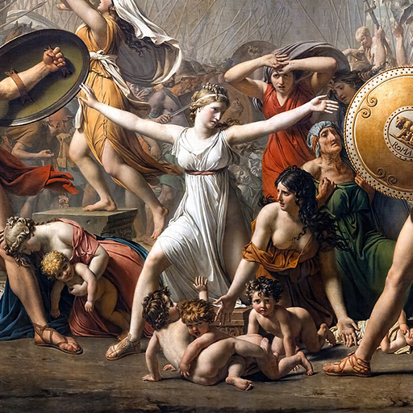

第6卦 天水訟：誰都沒有贏
上卦：天（☰） ・ 下卦：水（☵）

核心意義
你正處於立場不同、誰都覺得自己有理的張力之中。執著於爭辯對錯，只會耗盡彼此的心力；真正的勝出是停止紛爭。退一步檢視自己內在的防衛與執著，必要時借助公正的第三方，讓衝突有機會轉為共識。
「我放下證明自己的執念，以平靜與智慧化解紛爭。」
祝福
願你放下不必要的爭執，把力氣留給真正重要的事，內心因此更加平靜。
五大類別指引
感情
關係裡可能存在立場不同、彼此都覺得自己有理的情況。此刻最重要的不是贏過對方，而是確認這件事到底值不值得繼續爭；把力氣從證明我對收回來，才能聽見對方話裡真正的在乎。
確認這件事值不值得繼續爭，把力氣留給關係本身：
- 把爭執的核心濃縮成一個問題來談，不翻舊帳。
- 當對話開始重複時主動喊停，等情緒降溫再繼續。
事業
工作上可能出現權責、利益或觀點的爭議，正面處理是必要的，但若一路把衝突推到最高點，雙方都會付出很高的代價。先釐清事實與底線，尋找雙方都能接受的最小共識，比爭一口氣更實際。
把口頭爭論整理成清楚的事實與紀錄：
- 先找雙方都能接受的最小共識，再逐步處理分歧。
- 在衝突升級前嘗試一次中立協調，保留轉圜空間。
健康
你可能在不同資訊或建議之間感到矛盾，不知道該相信哪一個。與其自己爭論哪種說法才對，不如回到可靠證據與實際反應；把衝突的建議列出比較，針對矛盾處詢問專業人員。
把矛盾的建議列出來比較，回到可靠依據：
- 針對說法衝突的部分詢問合格專業人員。
- 不同方法不要同時大量嘗試，以免無法判斷效果。
財運
金錢上容易出現契約、分帳或責任歸屬的爭議。越是牽涉利益，越需要靠清楚的紀錄與文件，而不是只靠彼此記憶；把條件寫明白、把帳目對清楚，爭議會在透明中失去燃料。
把付款、借款與合作條件留下書面紀錄：
- 對有爭議的金額先停止新增交易。
- 金額重大時尋求專業的法律或財務意見。
人際
目前的人際氣氛比較容易因立場不同而緊張。不是每一場爭論都需要分出輸贏，有些關係反而需要知道何時停下來；給彼此一點空間，等情緒降溫後再談，往往比當下爭個明白更有效。
發現對話開始重複時，主動結束爭辯：
- 對重要誤會直接找當事人談，不經第三者傳話。
- 不在群體裡拉人站隊，讓事情保持單純。